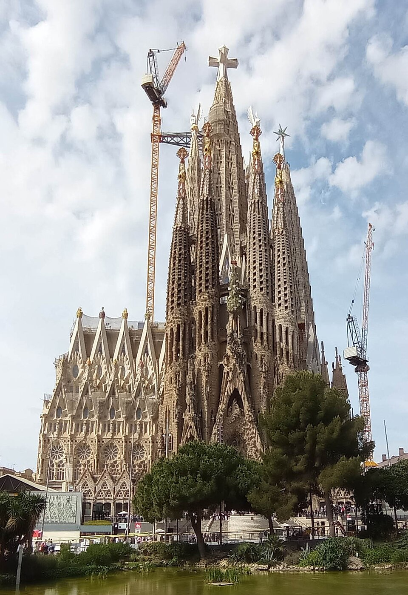
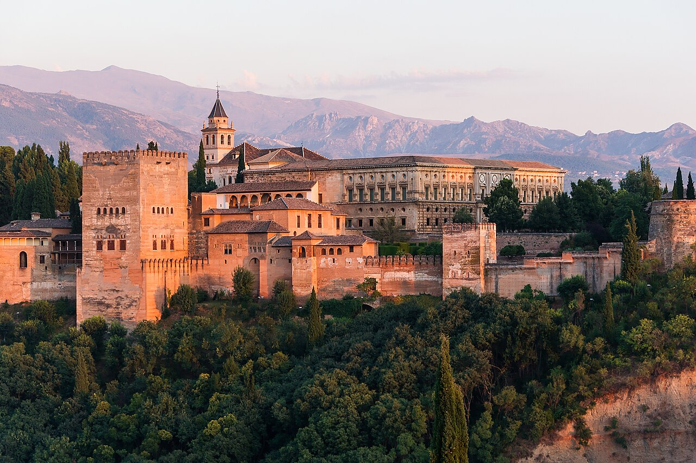
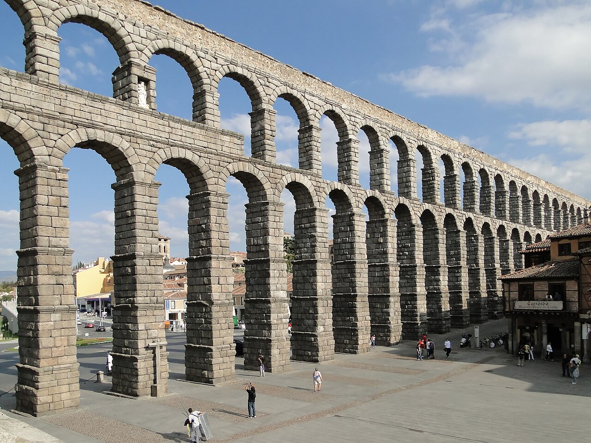
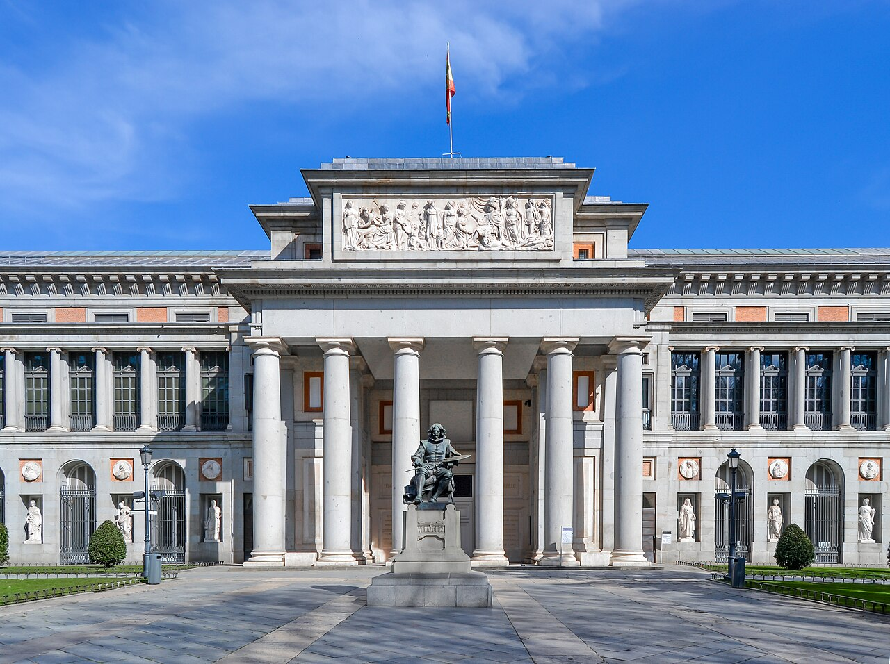
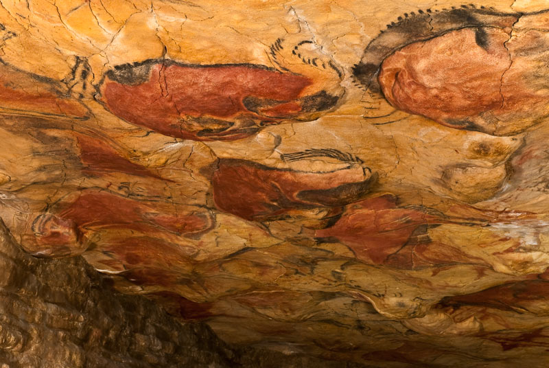
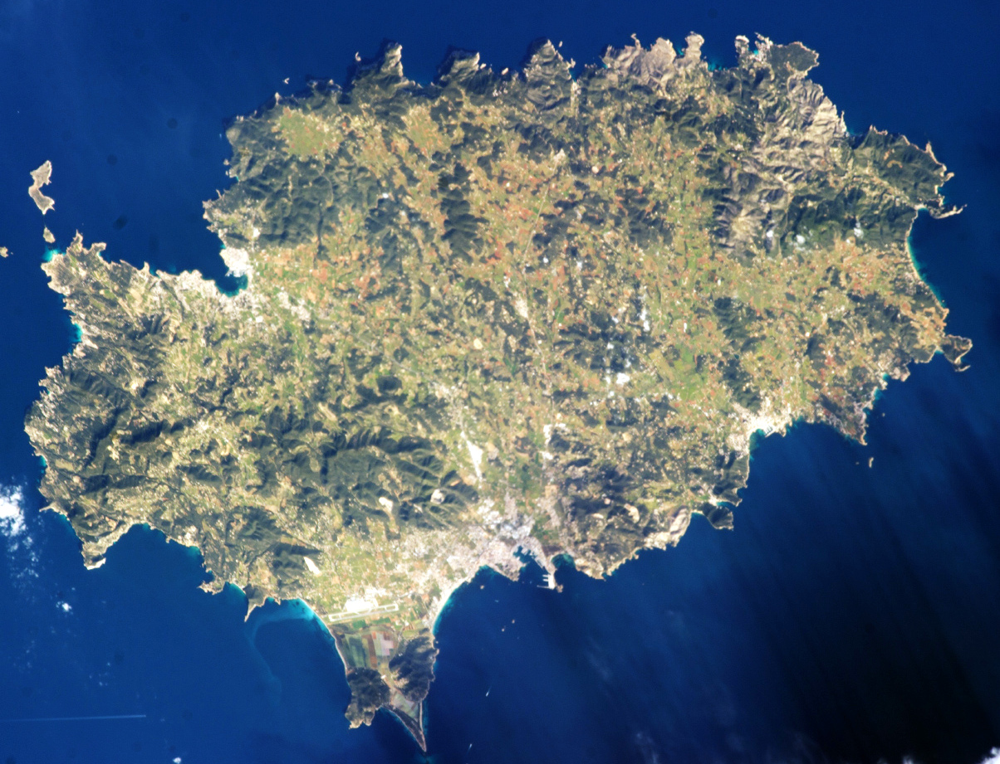

BARCELONA
サグラダ・ファミリア
バルセロナにあるカトリックの聖堂です。1882年に建設が始まり、後にアントニ・ガウディが設計を引き継いで、当初の計画を大きく変えました。
歴史ある建築、美術館、先史時代の壁画。6つの名所を写真で紹介します。

バルセロナにあるカトリックの聖堂です。1882年に建設が始まり、後にアントニ・ガウディが設計を引き継いで、当初の計画を大きく変えました。

スペイン南部、グラナダの丘に広がる宮殿や庭園の複合施設です。ナスル朝の王たちの居城として発展し、イスラム建築の美しさを今に伝えています。

古代ローマ時代に造られた、セゴビアの街へ水を運ぶための水道施設です。街中に連なる石造りのアーチが、特に有名な見どころです。

マドリードにある国立美術館です。ベラスケスやゴヤ、エル・グレコなどの作品をはじめ、ヨーロッパ絵画の豊かなコレクションを所蔵しています。

スペイン北部のカンタブリアにある、旧石器時代の壁画で知られる洞窟です。壁や天井に描かれた絵は、先史時代の人々の芸術を今に伝えています。

クラブやパーティーだけでなく、歴史的な遺産でも知られる島です。旧市街のダルト・ビラやサ・カレタの遺跡などが、島の長い歴史を伝えています。